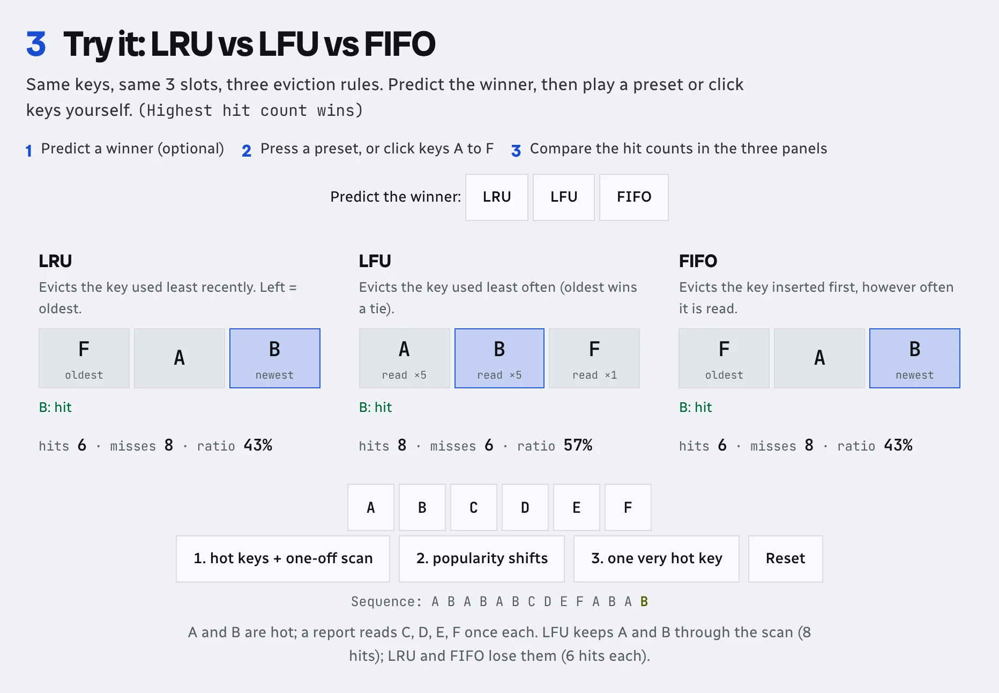
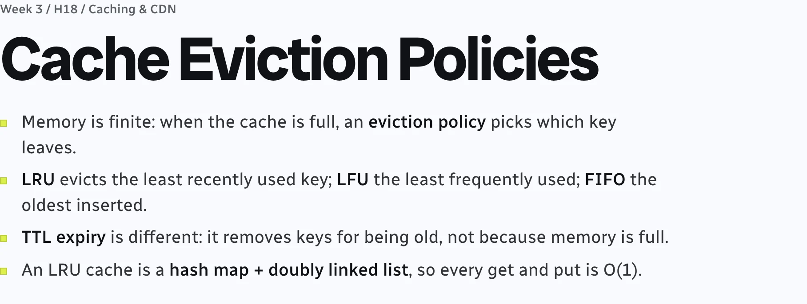
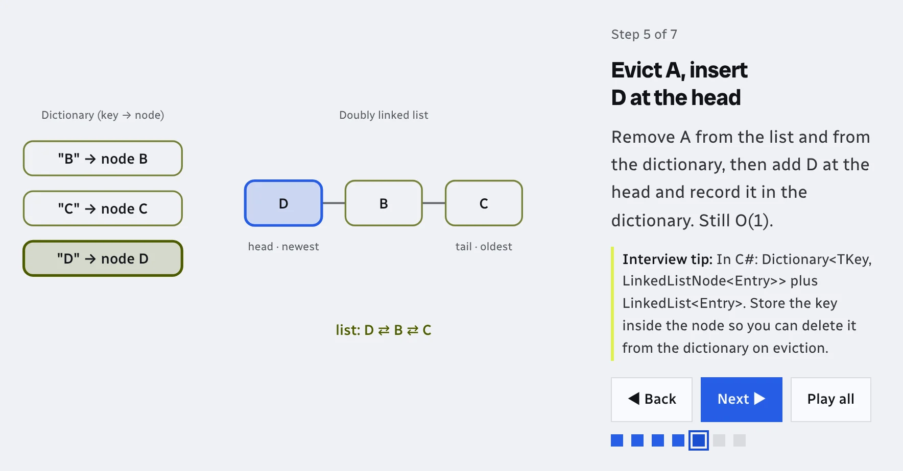
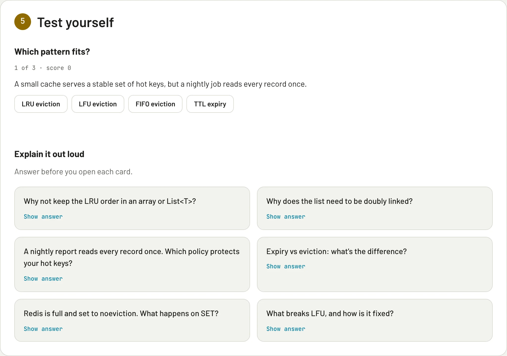

See How It Works
Animated, clickable walkthroughs for interview prep: system design, AWS, Python, Angular.

Five subjects
Each one is a roadmap of pages, in the order I learned them.
How a page works
Every explainer runs the same way, shown here on cache eviction.
-
Read the short bullets at the top.

-
Step through the walkthrough.

-
Play with the examples, then try the quiz.

-
Close it.
Then draw it from memory.